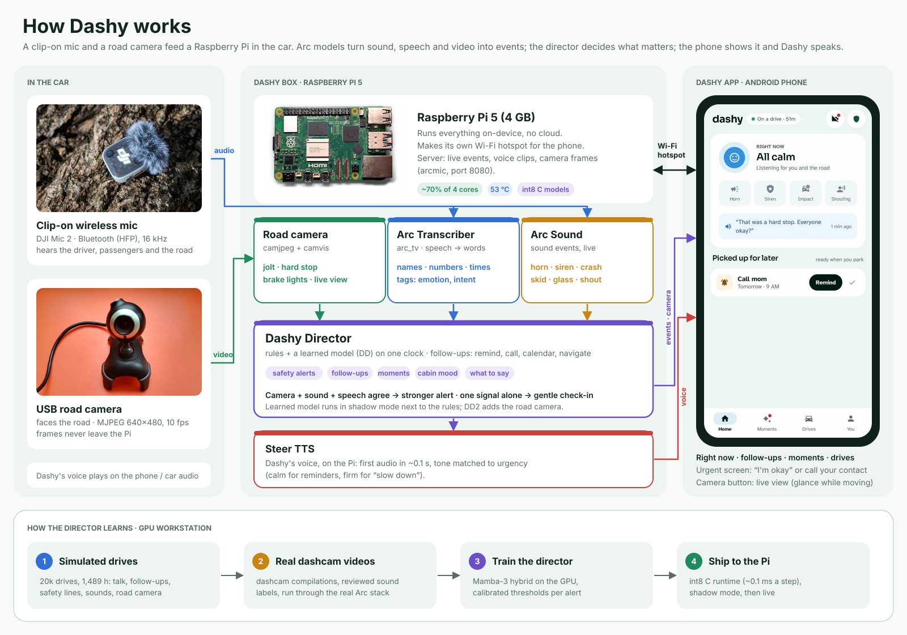
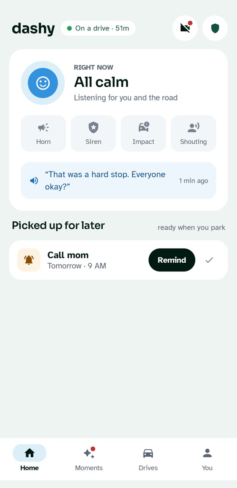
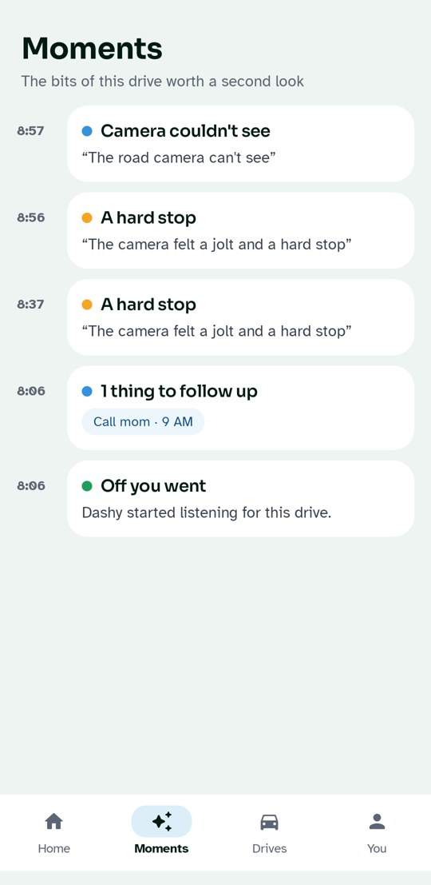
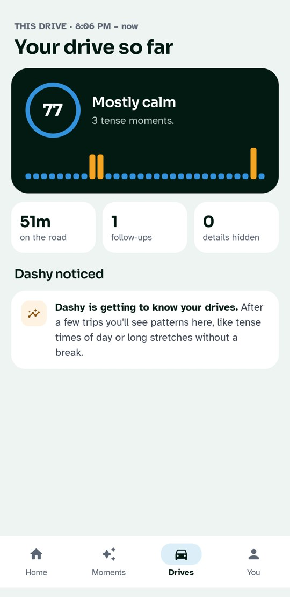

How Dashy works
A small box in the car listens to the cabin and watches the road. It runs everything on a Raspberry Pi, with no cloud. It picks up what you ask for, notices when something goes wrong, and talks back through your phone.

The parts
Clip-on mic
A DJI Mic 2 connects to the Pi over Bluetooth (hands-free profile, 16 kHz). It hears the driver, the passengers and the road.
USB road camera
Faces the road and streams MJPEG at 640×480, 10 frames a second. Frames stay on the Pi; only road events and the app's live view use them.
Raspberry Pi 5
Runs every model on-device and makes its own Wi-Fi hotspot, so the phone connects with no internet. One server (arcmic, port 8080) streams live events to the app.
On the Pi
Arc Transcriber
Turns speech into words as you talk (arc_tv), with names, phone numbers and times, and tags for emotion and intent.
Arc Sound
Marks sounds as they happen: horn, siren, crash or impact, tyres screeching, glass breaking, shouting.
Road camera
A tiny C decoder and a few lines of Python read each frame at 80×60 and report jolts, hard stops, brake lights ahead, darkness and a covered lens, at about 5% of one core.
Dashy Director
Puts words, sounds and road events on one clock and decides what matters.
- Safety alerts, with an urgent screen for the serious ones
- Follow-ups: remind, call, calendar, navigate
- Moments worth a second look, and the cabin's mood
- When to speak and what to say
Signals that agree
A crash heard in speech or sound, plus a jolt and a hard stop on the camera, is a confirmed alert. One signal alone gets a gentle check-in: “That was a hard stop. Everyone okay?”
Steer TTS
Dashy's voice, made on the Pi: first audio in about a tenth of a second, calm for reminders and firm for “slow down”.
The app
The Android app joins the Pi's hotspot and shows the drive as it happens. Follow-ups wait until you park; the urgent screen lets you say you're okay or call your emergency contact; the camera button opens a live view (a short glance while the car is moving).


